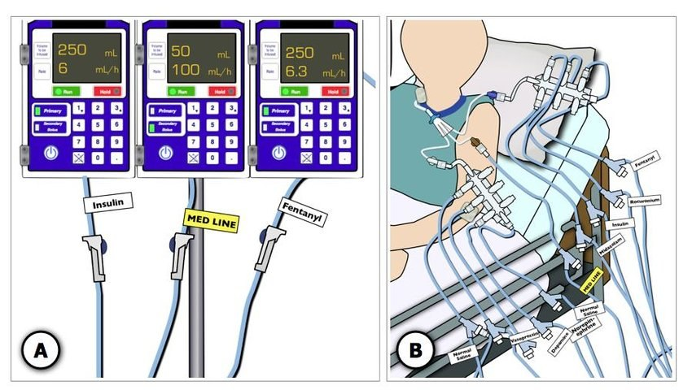
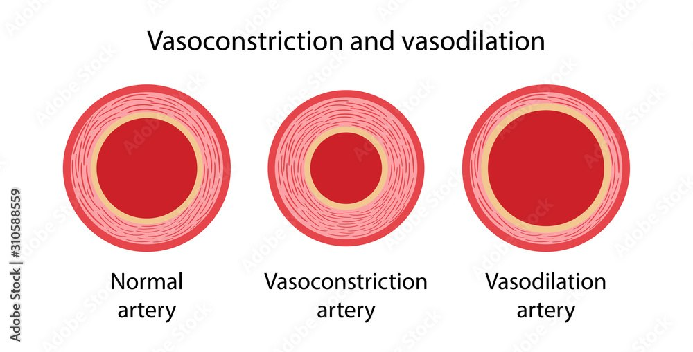

Day 5 · Topic 1
IV Medication Management
Things to Bring Forward
Earlier Content This Topic Builds On
- PCA: how it works, and the nursing responsibilities.
Continuous IV Medications
What Continuous IV Medications Are Used For
- Pain control and sedation.
- Blood pressure management.
- Heart rhythm management.
- Infection: antibiotics.
- Fluids: to help the blood pressure, and to keep the patient hydrated.
- TPN and lipids.
Nursing Responsibilities
| Responsibility | What to Check |
|---|---|
| Correct bag, labeled, active order |
|
| Labeled tubing |
|
| Changing out IV tubing |
|
| Line patency |
|
| Site inspection |
|
| Compatibility |
|
Chart each drip's rate every hour, especially while titrating often. Many drips at once is common.

Titrating IV Medications
| Principle | What to Know |
|---|---|
| Understand standard dosing |
|
| Confirm the order |
|
| Onset of working |
|
| Titrate slowly |
|
Sedation and Pain Medications
Why sedate: oxygen supply and demand, and keeping the patient cooperating with ventilatory support.
| Drug | Class | Key Points |
|---|---|---|
| Fentanyl (mcg/hr) | Opioid |
|
| Morphine (mg/hr) | Opioid |
|
| Hydromorphone | Opioid |
|
| Midazolam (mg/kg/hr) | Benzodiazepine |
|
| Lorazepam (mg/kg/hr) | Benzodiazepine |
|
| Propofol (mcg/kg/min) | Other sedative |
|
| Dexmedetomidine (mcg/kg/hr) | Other sedative |
|
Considerations With IV Pain and Sedation Medications
| Consideration | What to Know |
|---|---|
| LOC |
|
| Respiratory function |
|
| Blood pressure |
|
| Pain assessment |
|
| Bolus |
|
| PCA |
|
Paralytic Medications
Never paralyze until sedated. No push or drip of vecuronium or rocuronium until the patient is completely sedated. An airway must be in place: a paralyzed patient cannot move the diaphragm, so cannot breathe. Every paralyzed patient is mechanically ventilated.
Paralytics (Neuromuscular Blockade)
- When: sedation alone (fentanyl and midazolam, or propofol) is not enough, because oxygen supply and demand are so unbalanced.
- Common in: increased ICP, ARDS. Septic shock and others too.
- Also: a patient not cooperating with mechanical ventilation.
- Vecuronium, rocuronium: pushed or run as a drip by the nurse.
- Succinylcholine, etomidate: quicker acting. Anesthesia pushes them, not nurses.
Train of Four
Train of Four: Monitoring the Paralytic
- Monitors the paralytic effect. Paralytics are titrated by its twitches.
- Get a baseline before sedating and paralyzing.
- Placed on the wrist: watch the thumb twitch.
- Chart it regularly, per hospital policy.
0 to 1 of 4
Usually over-blockaded.
2 of 4
The usual goal for a paralyzed patient.
3 of 4
Not enough blockade.
4 of 4
Not paralyzed at all.
← Most blockadeLeast blockade →
Caring for the Paralyzed Patient
- Cannot do anything for themselves.
- Skin and mucous membranes: oral care. Eye lubrication, since without muscle control the eyes may not close all the way.
- Passive range of motion, often with PT: the effects of immobility.
Blood Pressure and Hemodynamic Management
Keeping the blood pressure up is the primary concern for perfusion. A hemodynamically unstable patient often needs meds to raise the BP or cardiac output, or alter the heart rate.
Fill the tank before you squeeze the hose. These meds are insanely effective, but cannot squeeze an empty tank. The patient is fluid resuscitated, with adequate preload, before a pressor goes on, especially in trauma resuscitation and sepsis. Fluid resuscitation often continues alongside the pressor.
How Would You Know Their Volume Status?
- Invasive hemodynamic monitoring: a stroke volume, a calculated SVR.
- Edematous? May need a colloid to pull the third spacing back into the vessel.
- Intake and output. Urine output.
- Dry mucous membranes, though a dry patient is harder to see.
Stroke volume and SVR are taught in Hemodynamics
Squeeze, Clamp, or Both
How Meds Raise the Blood Pressure
- Squeeze: inotropes. The heart contracts harder, raising cardiac output and so the BP.
- Clamp: vasoconstriction. The arteries' diameter gets smaller and tighter, raising the SVR.
- Clamp and squeeze: a little of both. Many meds.

| Drug | Action | Effects | Main Uses |
|---|---|---|---|
| Dobutamine, milrinone | Squeeze |
|
|
| Vasopressin | Clamp |
|
|
| Phenylephrine | Clamp |
|
|
| Norepinephrine | Clamp and squeeze |
|
|
| Epinephrine | Clamp and squeeze |
|
|
| Dopamine | Clamp and squeeze |
|
|
Most of these are not safe for peripheral use. Epinephrine and norepinephrine need a central line most of the time.
Vasodilators
A High Blood Pressure: Before a Vasodilator
- Pain or anxiety? Make sure pain control is adequate.
- Meant to be sedated, for oxygen supply and demand? Make sure that is controlled.
- Then think of a vasodilator.
Vasodilators
- Nitroprusside: immediate action. Works very, very fast.
- Nicardipine: the one primarily used.
- Nitroglycerin.
Cardiac Rhythm Management
Continuous Rhythm Control
- Why: in shock, a perfusion problem leaves the heart short of oxygen and nutrients, so it is much more predisposed to dysrhythmias.
- Examples: AFib with RVR, in and out of torsades, long runs of VTach.
- Amiodarone: first line, continuous.
- Lidocaine: second line, continuous.
- Metoprolol: IV push, for rhythm control too.
What amiodarone and beta blockers do is taught in the Dysrhythmias review